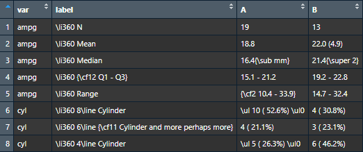
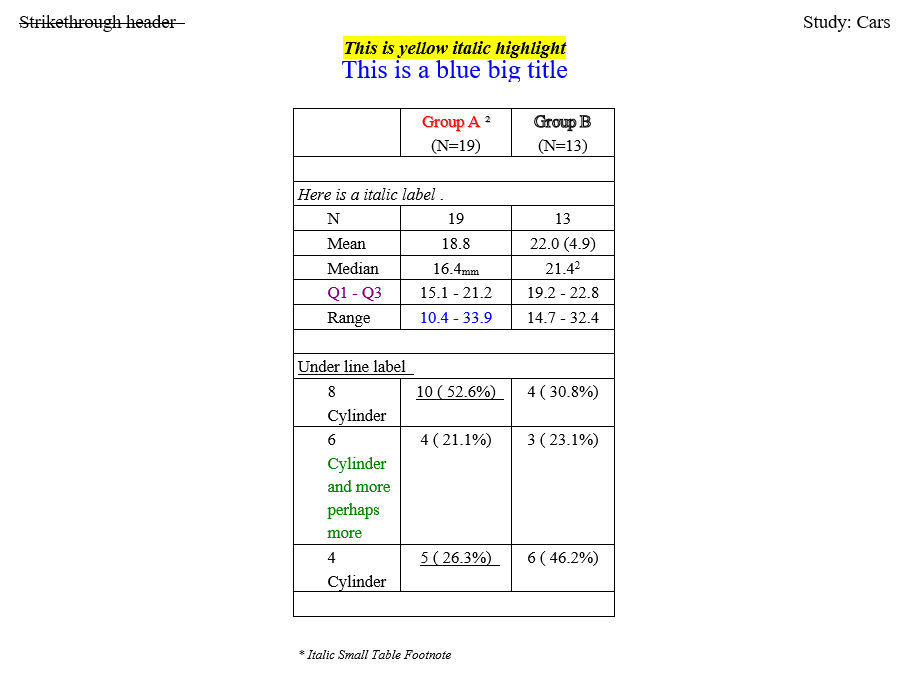
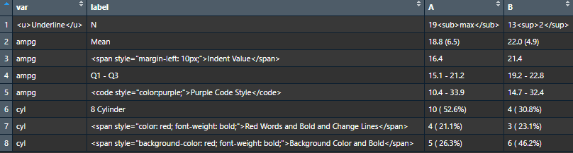
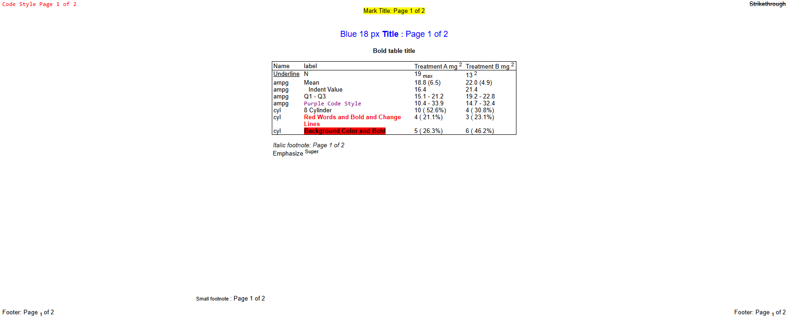

The reporter package allows users to insert code
directly with report_options(allow_code = TRUE). This
feature is currently available only for RTF and HTML outputs.
The reporter package let’s you insert RTF code in data sets, titles, footnotes, headers, and footers.
Let’s prepare a data set with RTF code:
df <- read.table(header = TRUE, text = '
var label A B
"ampg" "\\li360 N" "19" "13"
"ampg" "\\li360 Mean" "18.8" "22.0 (4.9)"
"ampg" "\\li360 Median" "16.4{\\sub mm}" "21.4{\\super 2}"
"ampg" "\\li360 {\\cf12 Q1 - Q3}" "15.1 - 21.2" "19.2 - 22.8"
"ampg" "\\li360 Range" "{\\cf2 10.4 - 33.9}" "14.7 - 32.4"
"cyl" "\\li360 8\\line Cylinder" "\\ul 10 ( 52.6%) \\ul0" "4 ( 30.8%)"
"cyl" "\\li360 6\\line {\\cf11 Cylinder and more perhaps more}" "4 ( 21.1%)" "3 ( 23.1%)"
"cyl" "\\li360 4\\line Cylinder" "\\ul 5 ( 26.3%) \\ul0" "6 ( 46.2%)"')
Observe that there are several RTF formatting codes in the data set:
\\li
\\sub and
\\super
\\cf
\\ul
Now let’s do some more manipulation of the RTF in the reporter code:
fp <- file.path(tempdir(), "example17.rtf")
# Create table
tbl <- create_table(df, first_row_blank = TRUE, borders = c("all")) |>
stub(c("var", "label"), width = .8) |>
define(var, blank_after = TRUE, label_row = TRUE,
format = c(ampg = "\\i Here is a italic label \\i0.",
cyl = "\\ul Under line label \\ul0")) |>
define(A, label = "\\shad {{\\cf6 Group A}} {common::supsc('2')}\\shad0", align = "center", n = 19) |>
define(B, label = "\\outl Group B \\outl0", align = "center", n = 13) |>
footnotes("\\i\\fs14 * Italic Small Table Footnote \\fs18")
# Create report and add content
rpt <- create_report(fp, orientation = "portrait", output_type = "RTF",
font = "Times") |>
report_options(allow_code = TRUE) |>
page_header(left = "\\strike Strikethrough header \\strike0", right = "Study: Cars") |>
titles("\\b\\i {{\\highlight7 This is yellow italic highlight}} \\b0\\i0",
"\\fs0\\fs28 {{\\cf2 This is a blue big title}} \\fs18") |>
add_content(tbl) |>
footnotes("\\i\\fs14 * Italic Small Report Footnote \\fs18") |>
page_footer(left = "Left",
center = "Confidential",
right = "Page [pg] of [tpg]")Note that in the reporter package, curly braces are
normally reserved for the glue replacement feature. Therefore, if you
want to use curly braces as part of your RTF code insertion, they must
be doubled, i.e.{{\\cf6 Group A}}. The single curly braces
will still be available as glue replacements.
Here is the result:

As seen above, all the RTF code insertion worked as expected:
The above example contains several references to the RTF color table. Here is the complete color table:
\cf1 : Black\cf2 : Blue\cf3 : Cyan\cf4 : Lime Green\cf5 : Magenta\cf6 : Red\cf7 : Yellow\cf8 : White\cf9 : Navy Blue\cf10 : Teal\cf11 : Green\cf12 : Purple\cf13 : Maroon/ Dark Red\cf14 : Olive\cf15 : Gray\cf16 : Light GrayThe above color references are the same as those used by SAS ODS RTF.
The reporter package also allows you insert HTML code in data sets, titles, footnotes, headers, and footers.
Let’s prepare a data set with HTML code:

Now let’s do some more manipulation of the HTML in the reporter code:
fp <- file.path(tempdir(), "example17b.html")
# Create table
tbl <- create_table(dat, borders = "outside") %>%
titles('<p style="color: blue; font-size: 18px;">Blue 18 px <b>Title</b>: Page [pg] of [tpg]</p>',
"<b>Bold table title</b>") %>%
footnotes("<i>Italic footnote: Page [pg] of [tpg]</i>", "Emphasize <sup>Super</sup>") %>%
define(var, label = "Name") %>%
define(A, label = "Treatment A mg<sup>2</sup>") %>%
define(B, label = "Treatment B mg<sup>2</sup>")
# Create Report
rpt <- create_report(fp, output_type = "html", font = fnt,
font_size = fsz, orientation = "landscape") %>%
report_options(allow_code = TRUE) %>%
set_margins(top = 1, bottom = 1) %>%
add_content(tbl) %>%
add_content(tbl) %>%
titles("<mark>Mark Title: Page [pg] of [tpg]</mark>") %>%
footnotes("<small>Small footnote</small>: Page [pg] of [tpg]", borders = "none") %>%
page_header('<code style="color:red;">Code Style Page [pg] of [tpg]</code>',
right = '<del>Strikethrough</del>') %>%
page_footer("Footer: Page <sub>[pg]</sub> of [tpg]",
right = "Footer: Page <sub>[pg]</sub> of [tpg]")
res <- write_report(rpt)
As seen above, all the HTML code insertion worked as expected: